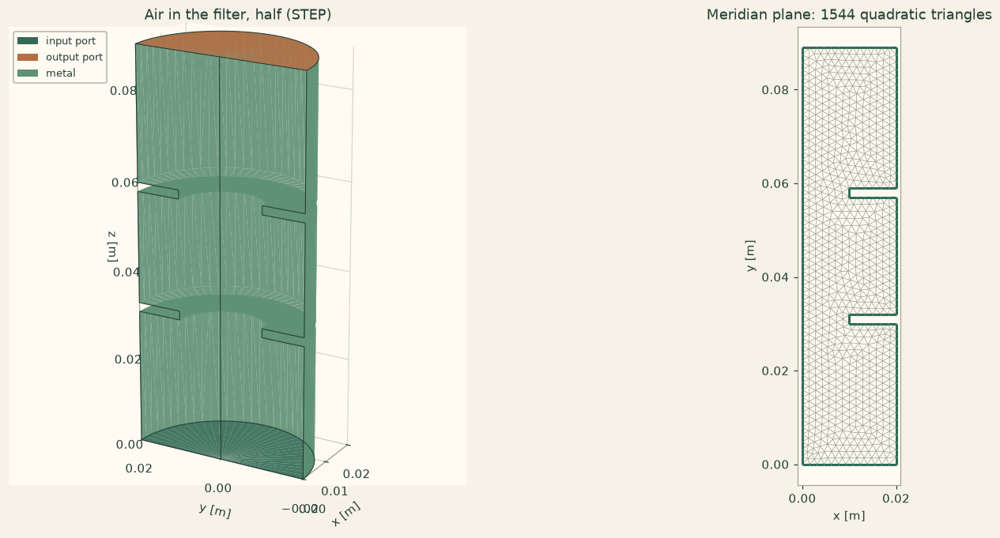

Docs › Examples › Circular waveguide iris filter
Microwaves, waveguide filters · 2D-axisymmetric
Circular waveguide iris filter
Two annular irises in a circular waveguide form a narrow-band cavity filter for the low-loss TE01 mode.
Run locally with OneSimulation. The example downloads are free. Running them requires an activated runtime. OneSimulation 1.0 · CPython 3.13 on macOS (Apple Silicon), Ubuntu 22.04 (x86-64), and Windows x64. Installation and activation · View pilot plans. Scope of the reference checks.

What it computes
OneSimulation cuts the meridian plane from a half solid of revolution read from STEP and solves the azimuthal E (TE0n) or H (TM0n) field with axisymmetric quadratic triangles; waveguide ports compute the Bessel modes of their port line and absorb each of them, the closed cavity between the irises is solved for its resonances, and the TE01 pass band is located by maximizing the computed transmission. The script that builds the STEP file comes with the notebook.
What it checks
The closed cavity resonates at the Bessel values to 5e-7 (TE011), 9e-9 (TM010) and 1.4e-7 (TM011); the filter passes |S21|^2 = 0.99999 at 10.7946 GHz, 138 MHz below the closed TE011 resonance, with a 4 MHz half-power band (loaded Q about 2700), and |S11|^2 + |S21|^2 = 1 to 1.2e-14 over both sweeps.
Geometry
The notebook starts at the import of the CAD files circular_waveguide_iris_filter.step, circular_waveguide_iris_filter_cavity.step: STEP (AP242), readable by any CAD program, with the names of the faces that the boundary conditions use. Put them next to the notebook.


The geometry script
The script circular_waveguide_iris_filter_geometry.py builds the geometry with the CAD objects of OneSimulation and writes the files. Change a dimension there, run it, and run the notebook again.
"""Geometry of the OneSimulation example "Circular waveguide iris filter".
Builds, as half solids of revolution about the z axis with the CAD objects of OneSimulation, the air
inside a circular waveguide of radius 20 mm with two annular irises (metal rings 2 mm thick with a
hole of 10 mm radius) that form a cavity 25 mm long, with 30 mm of guide on either side
(circular_waveguide_iris_filter.step; faces input and output are the ports, metal the wall and the
irises, axis the axis), and the closed cavity between the irises
(circular_waveguide_iris_filter_cavity.step, faces metal and axis).
"""
import numpy as np
from onesim.cad.d2 import Path, Profile, Segment
from onesim.cad.d3 import Revolution
radius, hole, iris, cavity, lead = 0.02, 0.01, 0.002, 0.025, 0.03
first, second = lead, lead + iris + cavity
end = second + iris + lead
outline = Path(
(0.0, 0.0),
(
Segment((radius, 0.0), name="input"),
Segment((radius, first), name="metal"),
Segment((hole, first), name="metal"),
Segment((hole, first + iris), name="metal"),
Segment((radius, first + iris), name="metal"),
Segment((radius, second), name="metal"),
Segment((hole, second), name="metal"),
Segment((hole, second + iris), name="metal"),
Segment((radius, second + iris), name="metal"),
Segment((radius, end), name="metal"),
Segment((0.0, end), name="output"),
Segment((0.0, 0.0), name="axis"),
),
)
closed = Path(
(0.0, first + iris),
(
Segment((radius, first + iris), name="metal"),
Segment((radius, second), name="metal"),
Segment((0.0, second), name="metal"),
Segment((0.0, first + iris), name="axis"),
),
)
for name, path in (("", outline), ("_cavity", closed)):
Revolution(profile=Profile(path), angle=np.pi).rotated((0, 0, 1), -np.pi / 2).save(
f"circular_waveguide_iris_filter{name}.step"
)The notebook
The complete notebook, cell by cell. Run it to produce the figures and the comparison printout.
A circular waveguide of radius \(a=20\) mm carries, among others, the circularly symmetric modes TE\(_{0n}\) (only \(E_\varphi\), the low-loss mode of long-distance waveguides) and TM\(_{0n}\) (only \(H_\varphi\)). Two metal rings, 2 mm thick with a hole of radius 10 mm, block most of the cross-section 25 mm apart. Between them a cavity forms; waves at its resonance tunnel through the holes and pass the filter, all others are reflected.
Everything is symmetric about the axis, so the field of these modes is computed on the meridian plane (\(r\), \(z\)): FrequencyDomainMaxwell with the polarization Ephi solves the TE\(_{0n}\) family and with Hphi the TM\(_{0n}\) family. SectionWaveguidePort computes the modes of the port line (Bessel functions) and absorbs each of them exactly.
| boundary | condition |
|---|---|
input, \(z=0\) | waveguide port, two modes, the first fed with 1 W |
output, \(z=89\) mm | waveguide port, two modes |
metal (wall and irises) | perfect electric conductor |
axis, \(r=0\) | regular: \(E_\varphi=H_\varphi=0\) |
Reference (D. M. Pozar, Microwave Engineering, 4th ed., §3.4 and §6.7; N. Marcuvitz, Waveguide Handbook, §2.3). The modes are cut off below \(f_c=c\,x/(2\pi a)\) with the Bessel zeros \(x=j'_{01}=3.8317\) (TE\(_{01}\), 9.14 GHz), \(j'_{02}=7.0156\) (TE\(_{02}\), 16.75 GHz), \(j_{01}=2.4048\) (TM\(_{01}\), 5.74 GHz) and \(j_{02}=5.5201\) (TM\(_{02}\), 13.18 GHz). A closed cylindrical cavity of length \(L\) resonates at
The pass band of the filter opens near the closed-cavity resonance, shifted by the holes; a symmetric lossless filter passes the full power at its peak.
import numpy as np
from onesim.cad.exchange import load
from onesim.materials import VACUUM_PERMEABILITY, VACUUM_PERMITTIVITY
from onesim.materials.electromagnetic import IsotropicElectromagneticMaterial
from onesim.meshing import TriangularMesher
from onesim.numerics import Numerics
from onesim.numerics.fem import FiniteElement, Lagrange, RevolvedH1SpaceFactory
from onesim.numerics.linear import ComplexSparseDirect
from onesim.physics.electromagnetics import (
FrequencyDomainMaxwell,
PerfectElectricConductor,
SectionWaveguidePort,
harmonic_resonances,
scattering_parameters,
)
from onesim.simulation import Problem, Simulation
from onesim.visualization import plots, theme
from scipy.optimize import minimize_scalar
from scipy.special import jn_zeros, jnp_zeros
theme.set()
light = 1 / np.sqrt(VACUUM_PERMEABILITY * VACUUM_PERMITTIVITY)Geometry and mesh
load reads the half solids of revolution; section with the plane \(y=0\) returns their meridian planes, whose sides keep the face names. Quadratic triangles of 1.6 mm in the filter (a thirteenth of the wavelength at 14 GHz) and 1 mm in the cavity.
parts = {
name: load(f"circular_waveguide_iris_filter{name}.step") for name in ("", "_cavity")
}
filter_plane, cavity_plane = parts[""].section((0, 1, 0)), parts["_cavity"].section(
(0, 1, 0)
)
sides = filter_plane.boundaries
radius, cavity = cavity_plane.size[0], cavity_plane.size[1]
mesh = TriangularMesher(target_size=1.6e-3).generate(filter_plane)
cavity_mesh = TriangularMesher(target_size=1e-3).generate(cavity_plane)
fig = plots.figure(1, 2, size=(14, 6))
plots.geometry(
parts[""],
selection={
"input port": parts[""].boundaries.input,
"output port": parts[""].boundaries.output,
"metal": parts[""].boundaries.metal,
},
labels=False,
camera=plots.Camera(elevation=20, azimuth=-150),
title="Air in the filter, half (STEP)",
ax=fig[0],
)
plots.mesh(
mesh,
groups=("all",),
legend=False,
title=f"Meridian plane: {mesh.cell_count} quadratic triangles",
ax=fig[1],
)
plots.show()Closed cavity
The cavity between the irises with metal on all sides: harmonic_resonances returns its lowest resonances in both families.
numerics = Numerics(
spatial=FiniteElement(element=Lagrange(order=2), provider=RevolvedH1SpaceFactory()),
linear_solver=ComplexSparseDirect(),
)
model = lambda plane, polarization, frequency: FrequencyDomainMaxwell(
domain=plane.domain(),
frequency=frequency,
material=IsotropicElectromagneticMaterial(),
polarization=polarization,
phasor_convention="exp(-i*omega*t)",
amplitude_convention="peak",
)
closed = {
polarization: harmonic_resonances(
Simulation(
problem=Problem(
name="Closed cavity",
geometry=cavity_plane,
physics=(m,),
boundary_conditions=(
PerfectElectricConductor(
physics=m, boundary=cavity_plane.boundaries.metal
),
),
),
mesh=cavity_mesh,
numerics=numerics,
).solve_stationary(),
m,
count=3,
near=5e9,
).real
for polarization in ("Ephi", "Hphi")
for m in [model(cavity_plane, polarization, 10e9)]
}
resonance = lambda x, p: light / (2 * np.pi) * np.hypot(x / radius, p * np.pi / cavity)
exact = {
"TE011": resonance(jnp_zeros(0, 1)[0], 1),
"TM010": resonance(jn_zeros(0, 1)[0], 0),
"TM011": resonance(jn_zeros(0, 1)[0], 1),
}
computed = {
"TE011": closed["Ephi"][0],
"TM010": closed["Hphi"][0],
"TM011": closed["Hphi"][1],
}
for name in exact:
print(
f"closed cavity {name}: computed {computed[name] / 1e9:.5f} GHz, Bessel formula {exact[name] / 1e9:.5f} GHz, "
f"relative difference {abs(computed[name] / exact[name] - 1):.1e}"
)Filter
The filter is swept over the band in which only the first mode of each family propagates: TE\(_{01}\) from 9.4 to 14 GHz, TM\(_{01}\) from 6 to 13 GHz. The TE\(_{01}\) peak is located by maximizing \(|S_{21}|^2\) near the highest transmission of the sweep and then swept finely over \(\pm15\) MHz. scattering_parameters returns \(S\) for (port, mode); the second mode of each port is evanescent here and carries no power.
problem = lambda m: Problem(
name="Iris filter",
geometry=filter_plane,
physics=(m,),
boundary_conditions=(
SectionWaveguidePort(
physics=m, boundary=sides.input, modes=2, incident_power=1.0
),
SectionWaveguidePort(physics=m, boundary=sides.output, modes=2),
PerfectElectricConductor(physics=m, boundary=sides.metal),
),
)
solve = lambda m: Simulation(
problem=problem(m), mesh=mesh, numerics=numerics
).solve_stationary()
simulate = lambda polarization, frequency: scattering_parameters(
solve(m := model(filter_plane, polarization, frequency)), m
)
coarse = {
"Ephi": np.arange(9.4e9, 14.001e9, 0.2e9),
"Hphi": np.arange(6.0e9, 13.001e9, 0.25e9),
}
scan = {
polarization: {f: simulate(polarization, f) for f in frequencies}
for polarization, frequencies in coarse.items()
}
best = max(scan["Ephi"], key=lambda f: abs(scan["Ephi"][f][(1, 0)]))
peak = minimize_scalar(
lambda f: -abs(simulate("Ephi", f)[(1, 0)]) ** 2,
bounds=(best - 0.2e9, best + 0.2e9),
method="bounded",
options={"xatol": 1e5},
)
scan["Ephi"] |= {f: simulate("Ephi", f) for f in peak.x + np.linspace(-15e6, 15e6, 31)}
bands = {polarization: np.array(sorted(runs)) for polarization, runs in scan.items()}
through = {
polarization: np.array(
[abs(scan[polarization][f][(1, 0)]) ** 2 for f in bands[polarization]]
)
for polarization in scan
}
balance = max(
abs(sum(abs(v) ** 2 for v in s.values()) - 1)
for runs in scan.values()
for s in runs.values()
)
print(
f"TE01 pass band: peak at {peak.x / 1e9:.4f} GHz with |S21|^2 = {-peak.fun:.6f}; closed cavity TE011 at {exact['TE011'] / 1e9:.4f} GHz "
f"(shift by the holes {(peak.x - exact['TE011']) / 1e6:+.0f} MHz); |S21|^2 > 0.5 over {np.ptp(bands['Ephi'][through['Ephi'] > 0.5]) / 1e6:.1f} MHz, "
f"loaded Q about {peak.x / max(np.ptp(bands['Ephi'][through['Ephi'] > 0.5]), 1.0):.0f}"
)
print(
f"TM01: transmitted power between {through['Hphi'].min():.3f} and {through['Hphi'].max():.3f} over 6 - 13 GHz, "
f"smallest at {bands['Hphi'][np.argmin(through['Hphi'])] / 1e9:.2f} GHz"
)
print(f"power balance |S11|^2 + |S21|^2 - 1 over both sweeps: largest {balance:.1e}")Figure
Left: the transmitted power of both families over the band, with the closed-cavity resonances and the TE\(_{01}\) cutoff marked. Middle: the narrow TE\(_{01}\) pass band. Right: the electric field \(|E_\varphi|\) in the meridian plane at the TE\(_{01}\) peak: the wave builds up in the cavity and leaves through the second hole.
field = solve(m := model(filter_plane, "Ephi", peak.x)).field(m.electric_field)
r, z = np.asarray(mesh.coordinates).T
fig = plots.figure(1, 3, size=(24, 6))
near = np.abs(bands["Ephi"] - peak.x) <= 15.1e6
plots.line(
y={
"TE01 (E_phi)": (bands["Ephi"] / 1e9, through["Ephi"]),
"TM01 (H_phi)": (bands["Hphi"] / 1e9, through["Hphi"]),
},
vlines={
"closed TE011": exact["TE011"] / 1e9,
"closed TM011": exact["TM011"] / 1e9,
"TE01 cutoff": light * jnp_zeros(0, 1)[0] / (2 * np.pi * radius) / 1e9,
},
xlabel="frequency [GHz]",
ylabel="|S21|^2",
title="Transmitted power of the iris filter",
legend="upper right",
ax=fig[0],
)
plots.line(
(bands["Ephi"][near] - peak.x) / 1e6,
{"TE01 (E_phi)": through["Ephi"][near]},
markers=True,
xlabel=f"frequency - {peak.x / 1e9:.4f} GHz [MHz]",
ylabel="|S21|^2",
title="TE01 pass band",
legend=False,
ax=fig[1],
)
plots.heatmap(
1e3 * z,
1e3 * r,
np.abs(field.evaluate(np.column_stack((r, z)))[:, 1]),
triangles=np.asarray(mesh.cells),
limits="robust",
label="|E_phi| [V/m]",
xlabel="z [mm]",
ylabel="r [mm]",
title=f"TE01 at the peak, {peak.x / 1e9:.3f} GHz",
ax=fig[2],
)
plots.show()Going further
Add a third iris in circular_waveguide_iris_filter_geometry.py to couple two cavities: the pass band widens into a two-pole response with steeper flanks. Smaller holes make the band narrower and move the peak towards the closed-cavity resonance.